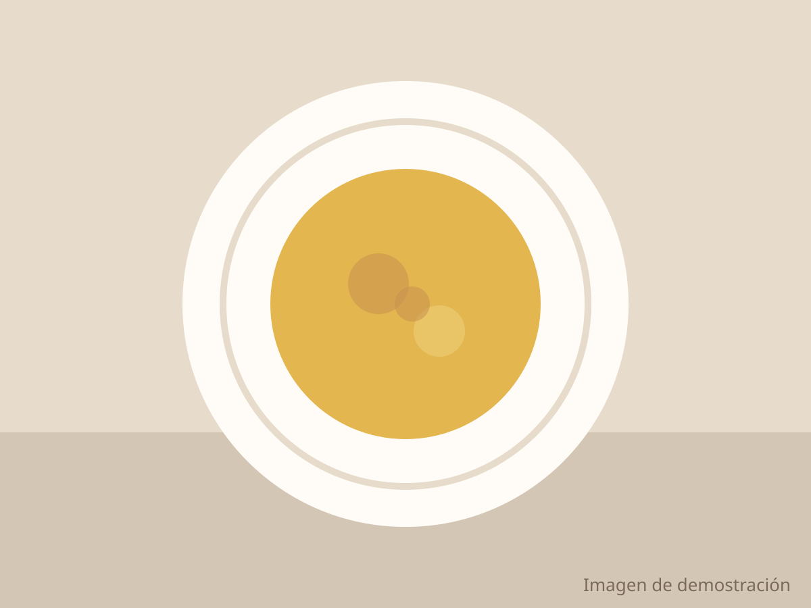

Tortilla de patatas jugosa
La clásica tortilla con las patatas pochadas lentamente y el centro cuajado a medias.

Ingredientes
- 6 huevos
- 600 g patatas
- 1 cebolla
- 200 ml aceite de oliva
- Sal al gusto
Preparación
Pela las patatas, córtalas en láminas finas y sálalas. Corta la cebolla en juliana.
Pocha las patatas y la cebolla en el aceite a fuego medio-bajo durante 15 minutos, sin que se doren.
Bate los huevos, mézclalos con las patatas escurridas y deja reposar 5 minutos.
Cuaja en una sartén antiadherente unos 3 minutos por cada lado, dándole la vuelta con ayuda de un plato.
Consejos
- Reserva el aceite sobrante, colado, para otras preparaciones.